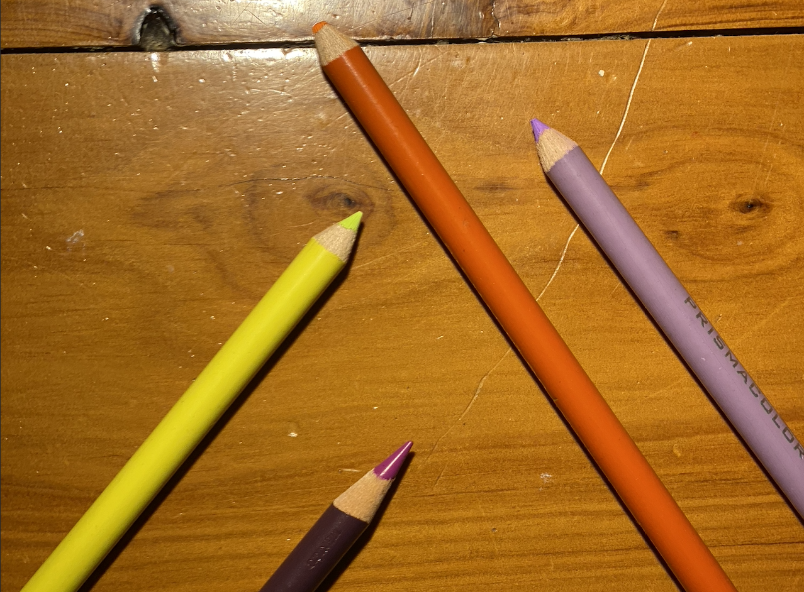
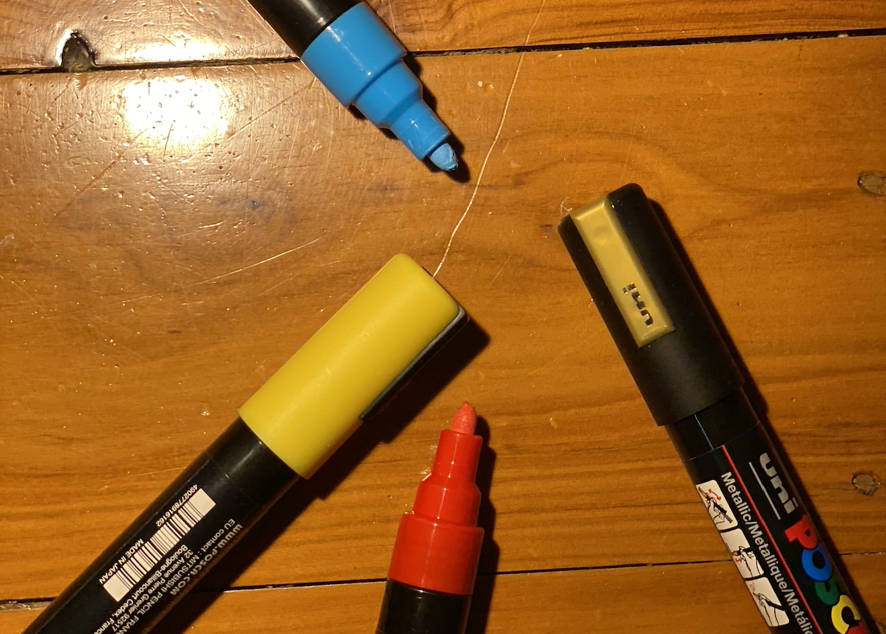
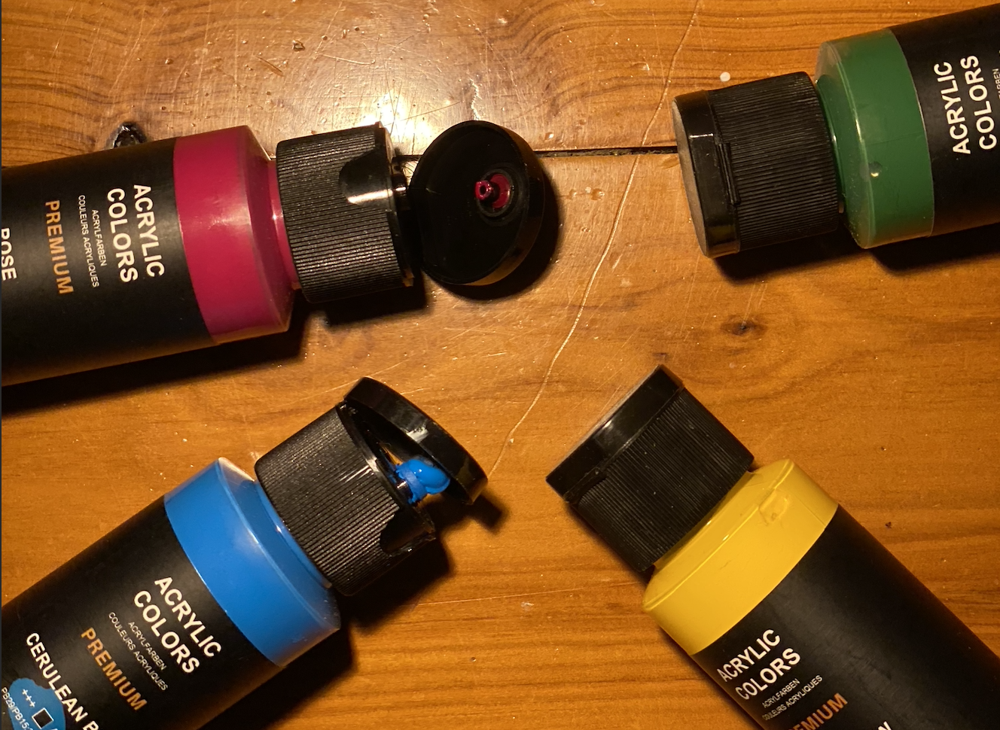
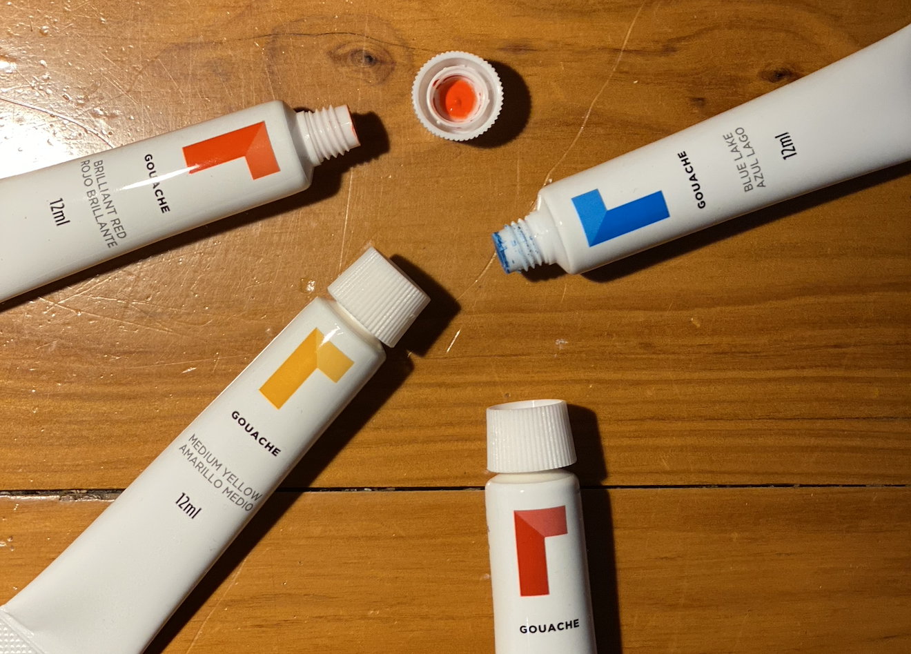

★ ★ ★ ★ ★
Ohuhu’s - My most reccomended supply, easy for beginners, allows smooth blending and a slightly more affordable alcohol marker brand!
★ ★ ★
Prismacolours - They have a bit of a learning curve, but coloured pencils just tend to have that trait. Super soft, and a wide range of colours
★ ★ ★ ★
Posca Paint Pens - Sturdy and pigmented, however the tip of the pens can fray depending on the surface you write on, super good on wood.
★ ★
Acrylic Paint - Wide range of colours and easy mixing, however dries really fast before you can finish using the whole pile.
★ ★ ★ ★
Gouache Paint - The pigment of acrylic with the mannerisms of watercolur. Allows you to adjust opacity easily and are a good investment as a beginner.